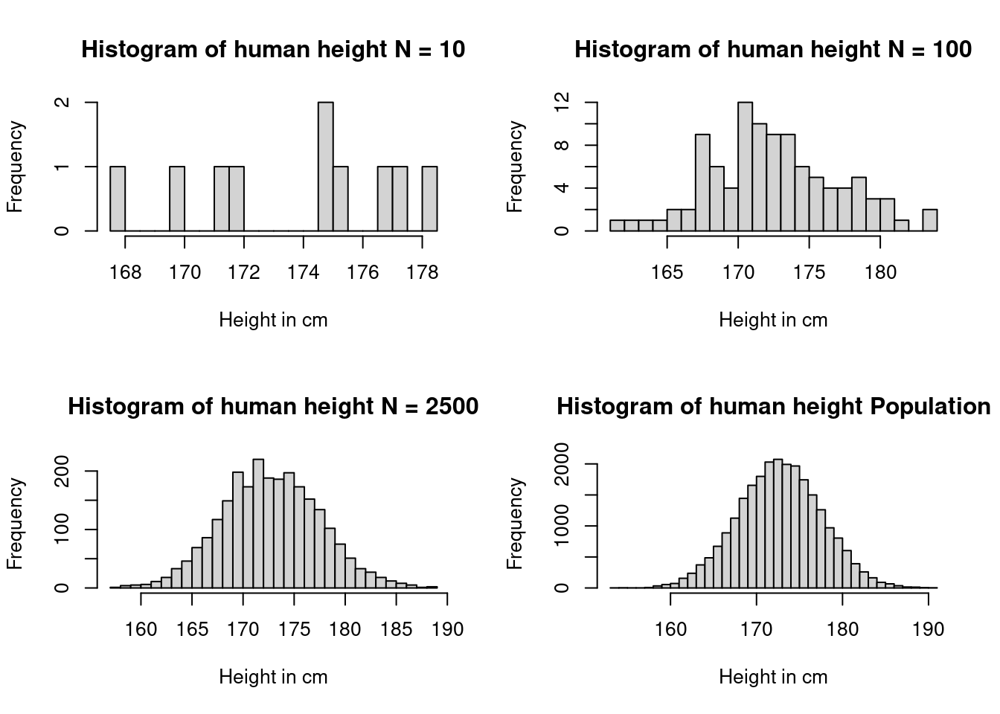
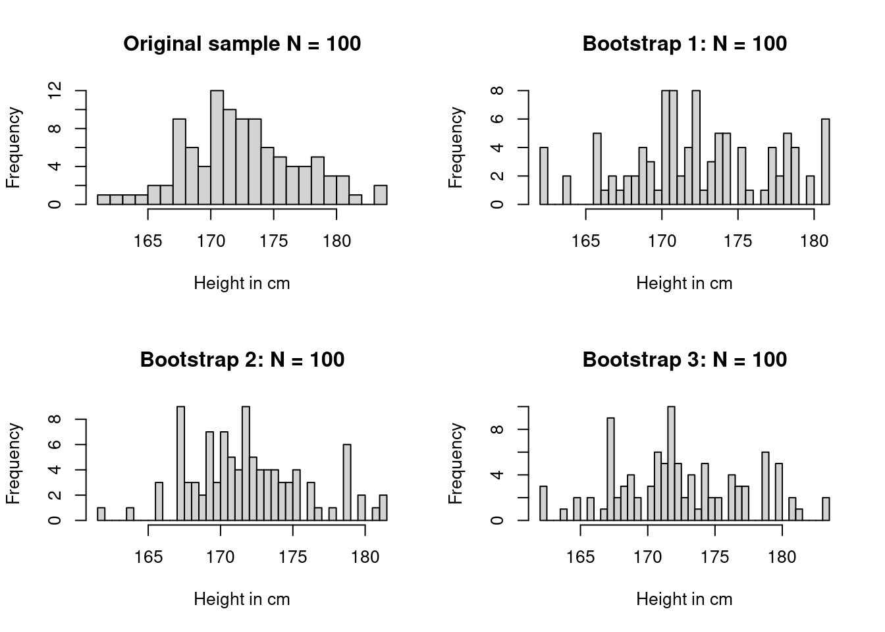

8How sure can we be about what is going on: Estimates and intervals
Overview
Keywords
How many people will there be on the planet in 2100? Nobody knows, but we can make use of our experience from the past and our knowledge of demographic mechanisms to build models, which support us in making systematic predictions. You did work out such a prediction model in your last project work of “people-count” using a regression model.
In 2020 the World Health Organisation WHO published one of it’s global population forecast. The WHO needs high quality predictions of population numbers to plan their programs. They also use a prediction model but it is more sophisticated than the linear model we used in the last unit. The WHO model takes many factors into account. Here is a picture that illustrates their prediction:
Code
whopredplot <- worldpop_pred %>%filter(country =='WORLD') %>%ggplot(aes(x = year)) +theme_classic() +geom_point(aes(y = population*1e-06)) +geom_ribbon(aes(ymin = population_lower95*1e-06,ymax = population_upper95*1e-06),alpha = .1) +labs(title ="WHO predicted world population with 95% prediction interval",x ="Year",y ="World population (Billions)")whopredplot
What you see in the picture are dots indicating the WHO prediction about how many people will be there on the planet in future years, starting from 2020, the year this prediction was produced. The points are shown for five year intervals on the horizontal axis and give the population count estimate on the vertical axis. So for instance for 2040 the prediction is a number slightly more than 9 billion. The precise number is 9.198847 billion.
But there is also a gray area surrounding the points. This area represents a margin of error that belongs to this prediction. There is an upper bound and a lower bound to this margin. The upper margin of error is 9.396987 billion and the lower margin of error is 8.996324. So there could be about 200 million people more or about 400 million people less. These are huge margins. This is a margin of error comprising x-times the size of the population of the United States of America. If you go further out into the future, say to the year 2080, this margin of error increases. Worse than that: While for 2080 the point estimate would still predict some sort of stabilization, the upper margin would indicate an increase, while the lower margin would indicate a decrease in the world population. So within the margin of error the predictions would even be qualitatively different.
Knowing the margin of error is important in order to get a more precise idea about the quality of the prediction. Anyone can make an estimate. But the real challenge is to make an realistic assessment of the possible error. This is a crucial element of statistics as a science and in we are going to learn the basic skills needed for making such assessments now.
The importance of having a reasonable idea about the margin of error doe not only refer to predictions but to any other statistical estimate depending on limited information.
The data on population counts collected by the WHO will be mostly be based on surveys. Let us assume the surveys are all well designed and accurately executed. Assume that the people and institutions who have conducted the surveys have been very careful to avoid biases. Then the summary statistics calculated from the sample, such as the mean or median age of the people counted or any other statistics calculated from the sample, should be close to the value of the statistics in the study population.
In a well designed study we expect the sample statistics, like the mean the median the standard deviation and the interquartile range to be close to the mean, median, standard deviation and interquartile range of the study population.
In the communication of data often only the summary statistics is reported and sometimes this may be enough. But knowing the uncertainty attached to the estimate will be important. It can even qualitatively change the information, as in our example, where the WHO forecast for the global population in 2080 could mean an increase as well as a decrease of the numbers. Knowing the exact differences between the sample and the population, or knowing the uncertainty in a prediction may be necessary for proper statistical inference.
Let us return to a dataset we have studies before, when we discussed how we get from information about a sample to information on the study population. Let us take our data socr_height_weight about height and weight of 25000 18 year old people we had discussed in unit 3. We retrieve the data from the JWL package and change the units of height from inches to cm and of weight from pounds to kg. Then we store the data in an R object which we call dat for simplicty.
To illustrate how the accuracy of statistics depends on sample size, let us take the data on human height and assume the 25000 data we have are the population and use our function emp_distr_height() to draw random samples from this population. In unit three we had drawn samples of 10, 100 and 2500.
The distributions of these various samples are shown in the following figure.
Code
par(mfrow =c(2, 2))h10 <-emp_distr_height(10)hist(h10$Height, breaks =30,main ="Histogram of human height N = 10",xlab ="Height in cm",ylab ="Frequency")h100 <-emp_distr_height(100)hist(h100$Height, breaks =30,main ="Histogram of human height N = 100",xlab ="Height in cm",ylab ="Frequency")h2500 <-emp_distr_height(2500)hist(h2500$Height, breaks =30,main ="Histogram of human height N = 2500",xlab ="Height in cm",ylab ="Frequency")hist(data$Height, breaks =30, main ="Histogram of human height Population",xlab ="Height in cm",ylab ="Frequency")

As the sample size gets smaller the sample gets more and more “bumpy” because the histogram becomes sensitive to individual data points. Only as the sample gets larger we come closer to the actual population distribution. This is also intuitively clear. If somebody would tell you he had measured 10 adults from Kenya and concludes that their average height is some number, this is less credible than in a case where the statement was based on a much larger number of observations.
Let’s go back to our problem at hand. What can we say about the mean height in our ficticious population based on our different samples?
You can see from the table that with substantive larger sample sizes our estimation of the mean becomes more and more precise.
8.1 Quantifying uncertainty by bootstraping: The basic idea.
In order to quantify the accuracy of our statistics we now have to work out a thought experiment. If we assume that we repeatedly drew samples of 25000 indivduals of 18 years an each time measured their mean height, by how much would the statistics - the mean height - vary?
If we knew how this statistics would vary, then we could say something about the accuracy of the statistics. But the precise variablity of the estimates depends on knowlegde of the population. But this knowledge is exactly the knowledge we do not have.
There are in principle two ways out of this circular reasoning. We could bring in probability and mathematics to make assumptions about the population distribution and work out the variability we would expect under these assumptions and thus how far away our statistics in our sample is from the value we would theoretically expect. This is an apporach you learn in every statistics course and we will learn it too later.
Here we take a second approach based on comptutation. We start from the plausible assumption that the population and the sample should roughly look the same. Since we can not draw repeated samples from the unkown population , we instead draw repeated samples from our sample.
Let us illustrate this idea with our height data. Let us take the sample of 100 and draw take three bootstrap resamples from this sample.
Code
set.seed(123)par(mfrow =c(2, 2))hist(h100$Height, breaks =30, main ="Original sample N = 100",xlab ="Height in cm",ylab ="Frequency")data <- h100b1 <-emp_distr_height(100)hist(b1$Height, breaks =30,main ="Bootstrap 1: N = 100",xlab ="Height in cm",ylab ="Frequency")b2 <-emp_distr_height(100)hist(b2$Height, breaks =30,main ="Bootstrap 2: N = 100",xlab ="Height in cm",ylab ="Frequency")b3 <-emp_distr_height(100)hist(b3$Height, breaks =30,main ="Bootstrap 3: N = 100",xlab ="Height in cm",ylab ="Frequency")

At the top left corner of this figure you see our original sample of 100 height data from our original population of 25.000, which has a mean of 173, 2100 data points in sequence, each time replacing the point we have taken, and get the second distribution in the top right corner in this way. This distribution has a mean of 172.46. The distribution can only contain data points taking on the same values as in the original sample, but it will contain different number of each value. Therefore the shape of the distribution will vary slightly and give a slightly different mean. In our case these means are 173.22, 172.46, 172.92.
Thus the resampling procedure gives us an idea how our statistics varies through this procedure of resampling with replacement. This is known as bootstraping the data. There is something “magic” about this approach, reflected in the name: As if pulling oneself up by one’s own bootstraps, here we learn about the variability of an estimate without making assumptions about the shape of the population distribution.
Repeating the resampling many times, say 1000 times, we get 1000 possible estimates of the mean. Let us do this repeated resampling for the examples of sample sizes of 10, 100, 2500 and in the end 25000, the size of our fictitious population.
Code
# Bootstrap: sample with replacementset.seed(45356) # So you can reproduce my resultsdata <- socr_height_weightdata$Height <- data$Height*2.54data$Weight <- data$Weight*0.4535924B <-1000# Number of bootstrap resamples to taken <-c(10,100,2500, 25000)out <-vector("list", length(n))for(j inseq_along(n)){bootstrapmeans <-vector("double", length = B)for (b in1:B) {# Draw a bootstrap sample bootstrapsample <-sample(data$Height,n[j],replace =TRUE)# Compute the bootstrap estimate bootstrapmeans[b] <-mean(bootstrapsample)}out[[j]] <- bootstrapmeans}
Code
par(mfrow =c(2, 2))hist(out[[1]], xlim =c(168,178), ylim =c(0,400),main ="1000 resamples from N = 10",xlab ="Mean height in cm")hist(out[[2]], xlim =c(168,178), ylim =c(0,400),main ="1000 resamples from N = 100",xlab ="Mean height in cm")hist(out[[3]], xlim =c(168,178), ylim =c(0,400),main ="1000 resamples from N = 2500",xlab ="Mean height in cm")hist(out[[4]], xlim =c(168,178), ylim =c(0,400),main ="1000 resamples from N = 25000",xlab ="Mean height in cm")
Note that the distribution of the estimates of the mean based on the resampled data is symmetric around the mean. The deeper mathematical reason for this fact is the so called Central Limit Theorem, which says that the distribution of sample means tends towards a normal distribution with increasing sample size almost regardless of the shape of the original distribution of the data. We will discuss this result in further detail later in the course.
The bootstrap distributions allow us to quantify the uncertainty connected to the estimate of the mean based on the sampled data. For example, we can find the range of means that contain 95 % of all the means of the bootstrap resample and call this the 95 % uncertainty interval for the original estimates, or the margins of error.
Also observe that the bootstrap distributions get narrower as the sample size increases. This means that uncertainty shrinks and the estimate becomes more precise.
One of the appeals of the bootstrap approach to quantify uncertainty is that we were able to do this without any mathematics but the idea of drawing observations at random. All we need is an estimate and a sampling distribution. Thus the quantification of uncertainty is almost entirely based on computation.
We did, so far, not show you the details of how the computations are done. We will introduce these concepts now. They will enlarge the frontier of your R knowledge by the concept of R’s list class as well as the concept of computational iteration.
8.2 Doing bootstraps using R
It is now time to learn some more R, in order to do the computations needed for a bootstrap. One convenient data structure in this context is R’s list class. The other very useful concept, which you will very often need in computation and coding is the concept of iteration. Let us begin with the R-list class.
8.2.1 The R list class
Let us for a moment go back to the children nutrition data from the DHS survey we discussed in unit 2 and load this dataset again and store them in a variable with a simpler name.
library(JWL)dhs_data <- children_nutrition_data
In unit 2 we discussed one approach how we could compute the number of cases of stunting across the four regions in the dataset. In the exercises we discussed how to do the same computation more efficiently using the tapply() function.
Let us introduce here a related function, called split(). There are usually several ways in R how we can filter data. In unit 2 we used the which() function to compute indices for the appropriate rows we wanted to select from our dataframe. Another way could be, like this:
We can do this region by region and compute the shares also for regions 2, 3 and 4.
Here is a faster and cleaner way to achieve the same thing using split():
regions <-split( dhs_data[ ,c("wt", "nt_ch_stunt", "region")], dhs_data$region )lapply(regions, head)
$`region 1`
wt nt_ch_stunt region
323 0.262466 TRUE region 1
425 0.262466 FALSE region 1
495 0.262466 FALSE region 1
498 0.262466 FALSE region 1
826 1.846709 FALSE region 1
827 1.846709 FALSE region 1
$`region 2`
wt nt_ch_stunt region
16 1.049502 FALSE region 2
27 1.049502 TRUE region 2
36 1.049502 TRUE region 2
94 1.049502 FALSE region 2
106 1.049502 FALSE region 2
113 1.049502 TRUE region 2
$`region 3`
wt nt_ch_stunt region
1025 0.457125 TRUE region 3
1026 0.457125 FALSE region 3
1039 0.457125 TRUE region 3
1102 0.457125 FALSE region 3
1103 0.457125 TRUE region 3
1124 0.457125 FALSE region 3
$`region 4`
wt nt_ch_stunt region
149 0.925559 FALSE region 4
158 0.925559 FALSE region 4
159 0.925559 FALSE region 4
171 0.925559 TRUE region 4
172 0.925559 FALSE region 4
187 0.925559 TRUE region 4
Let’s unpack this piece of code: You already know the syntax dhs_data[ ,c("wt", "nt_ch_stunt", "region")]. This says that R should choose from the dataframe dhs_data all rows and the columns with the names “wt”, “nt_ch_stunt” and “region”. We could also have selected the columns by indices.
Now this (reduced) dataframe is given as one argument to the function split(). The second argument is the column dhs_data$region. This tells the split function the criterion how to split up the dataframe in data chunks by region, i.e. region 1, 2 etc.
The new split data are in an object called regions and this object has a new class
class(regions)
[1] "list"
This class is called in R a list. In this example the list regions contains four dataframes, which we can individually access using the $-sign. We use the head()function to avoid showing the entire dataframe.
head(regions$"region 1")
wt nt_ch_stunt region
323 0.262466 TRUE region 1
425 0.262466 FALSE region 1
495 0.262466 FALSE region 1
498 0.262466 FALSE region 1
826 1.846709 FALSE region 1
827 1.846709 FALSE region 1
Or we could alternatively use indices. But now for the list class we will need double brackets, like this:
head(regions[[1]])
wt nt_ch_stunt region
323 0.262466 TRUE region 1
425 0.262466 FALSE region 1
495 0.262466 FALSE region 1
498 0.262466 FALSE region 1
826 1.846709 FALSE region 1
827 1.846709 FALSE region 1
This retrieves the first dataframe from the list of dataframes.
Lists are particularly useful to store R objects of different types or classes. For example, one list entry can be a dataframe, another one can consist of characters, another of numbers and so on. Here is a toy exmple:
l <-list(a =c(2,5), b ='sky')l
$a
[1] 2 5
$b
[1] "sky"
As we see in the toy example, we can give names to list elements. When we use split() the names will be taken from the columns according to which the data are split. If we don’t like these default names we can override them by using the names()function.
$`County A`
wt nt_ch_stunt region
323 0.262466 TRUE region 1
425 0.262466 FALSE region 1
495 0.262466 FALSE region 1
498 0.262466 FALSE region 1
826 1.846709 FALSE region 1
827 1.846709 FALSE region 1
$`County B`
wt nt_ch_stunt region
16 1.049502 FALSE region 2
27 1.049502 TRUE region 2
36 1.049502 TRUE region 2
94 1.049502 FALSE region 2
106 1.049502 FALSE region 2
113 1.049502 TRUE region 2
$`County C`
wt nt_ch_stunt region
1025 0.457125 TRUE region 3
1026 0.457125 FALSE region 3
1039 0.457125 TRUE region 3
1102 0.457125 FALSE region 3
1103 0.457125 TRUE region 3
1124 0.457125 FALSE region 3
$`County D`
wt nt_ch_stunt region
149 0.925559 FALSE region 4
158 0.925559 FALSE region 4
159 0.925559 FALSE region 4
171 0.925559 TRUE region 4
172 0.925559 FALSE region 4
187 0.925559 TRUE region 4
What if we wanted the third row of the dataframe of region 1?
head(regions[[1]][3, ])
wt nt_ch_stunt region
495 0.262466 FALSE region 1
Some of you may have noticed that the $ signs are both used to refer to columns in a dataframe as well as to elements of a list. This is no coindcidence, because in R dataframes are lists. Each column is one element of the list.